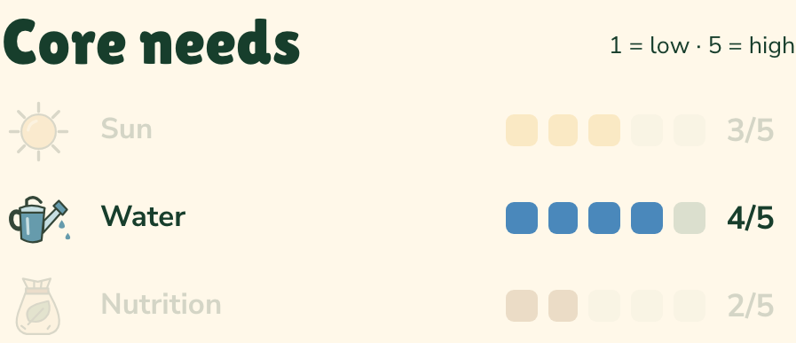

HOW TO USE THESE SHEETS
Difficulty rating
Some vegetables, such as radishes, are great for beginners, whereas crops like celery and cauliflower will defeat even experienced gardeners in a bad season. The scale will give you an idea of how easy a crop is to grow, and how tolerant it is of adverse growing conditions.
Core needs
An under-supply of sun, water or manure can damage some plants, while too much can harm others. Use this as a guide to core vegetable requirements.
